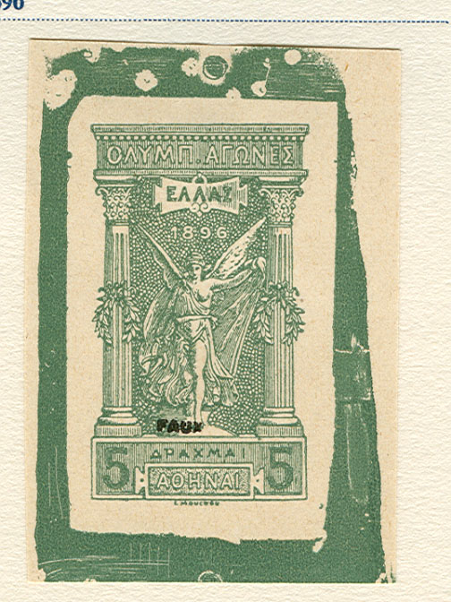
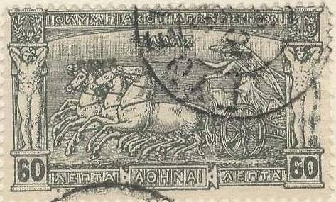
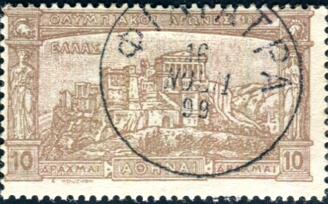
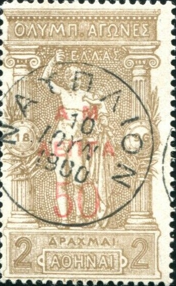

Some forged Fournier cancels, obtained from a 'Fournier Album of Philatelic Forgeries', the first cancel was used for Serbia.
Return To Catalogue - Greece Overview
Note: on my website many of the
pictures can not be seen! They are of course present in the
catalogue;
contact me if you want to purchase the catalogue.
Deceptive forgeries of the 1896 Olympic Games exist of the values 40 l, 60 l, 2 D, 5 D and 10 D. According to the Serrane guide they were made in Genoa and exist with forged cancellations (among them by the forger Fournier). Serrane says the perforation of the originals should be 13 1/2 x 14, while the forgeries have perforation 14 1/2 x 14. Examples of forgeries:
Some forged Fournier cancels, obtained from a 'Fournier Album of
Philatelic Forgeries', the first cancel was used for Serbia.

Unfinished Fournier forgery as taken from a 'Fournier Album of
Philatelic Forgeries'. Next to it a finished one with forged
cancel as shown above.
(Fournier forgery, reduced size)


Fournier forgeries of the 10 D value with a cancels as shown in
'The Fournier Album of Philatelic Forgeries'. Next to it a
forgery with a 'FAUX' overprint, probably from the same album.

Two other Fournier forgeries, from the Fournier Album.


Two other Fournier forgeries from a Fournier Album.
The forger Fournier offers forgeries of the 5 D green and 10 D brown in his 1914 pricelist (first choice forgeries) for 2 Swiss Francs. On the same forgeries he also forged the overprints 1 D on 5 D green and the 2 D on 10 D brown (offere in his 1914 pricelist for 2 Swiss Francs). According to the Serrane guide, these forgeries were acutally made in Genoa (by Imperato?). The 5 D has the squares in the background very badly done and the 'H' of 'MOUCHON' is blur.

Genoa forgeries. The forged cancel "APTA 13 MAPT 99"
was often used.

Two more forgeries with the "APTA 13 MAPT 99" cancel.


Two forgeries of the 60 l value.


Forgeries of the 5 D stamps, the second one with red surcharge.
Also some with the same "BOLOS 2 AGP 1900" cancel


Forgeries of the 10 D, according to the Serrane guide, the
background pattern is not as nicely done as in the genuine
stamps.

In this forgery of the 40 l, the trumpet of the right upper hand
person is touching the circular arc below it.

Two forgeries with the same cancel "NAYPLION 10 IOYN"
1900"
The forger Sperati made forgeries of the 5 Dr and 10 Dr designs. Since Sperati bleached out the design of a cheaper stamp and printed the forged 5 Dr and 10 Dr designs on it, the paper, cancel and perforations are genuine. Sorry, no images available yet. These forgeries are described in the BPA book on Sperati forgeries.
{kind=link}
{kind=link}
{kind=link}
{kind=link}